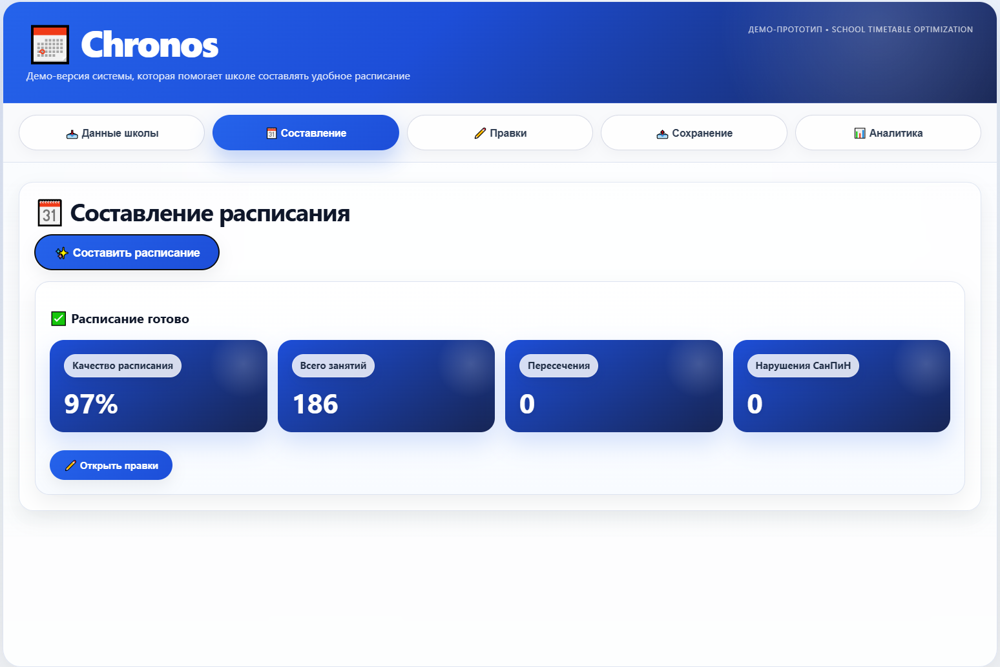
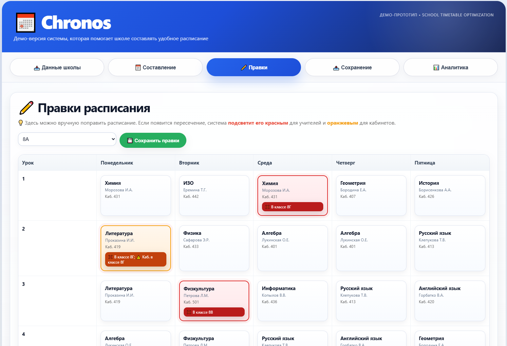
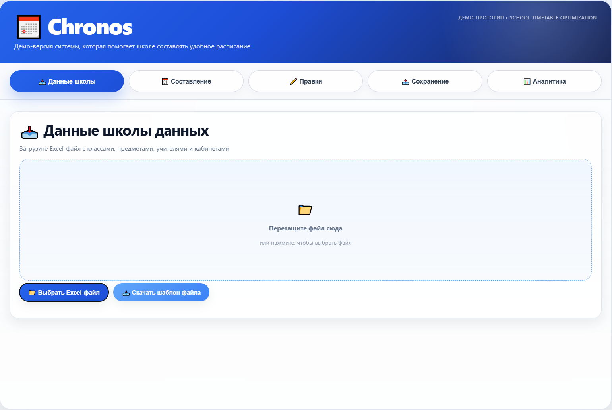
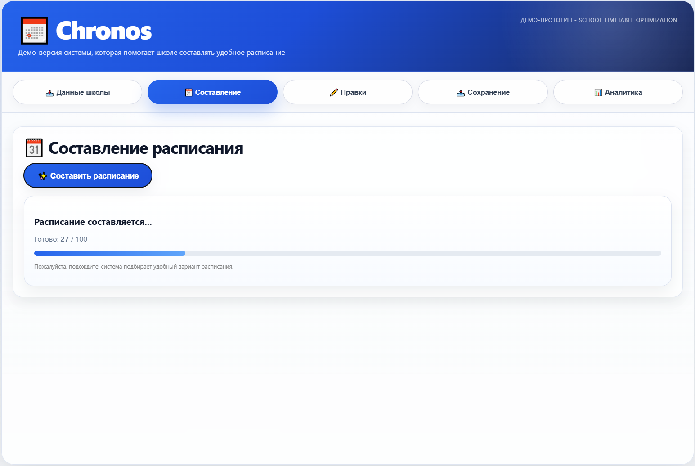
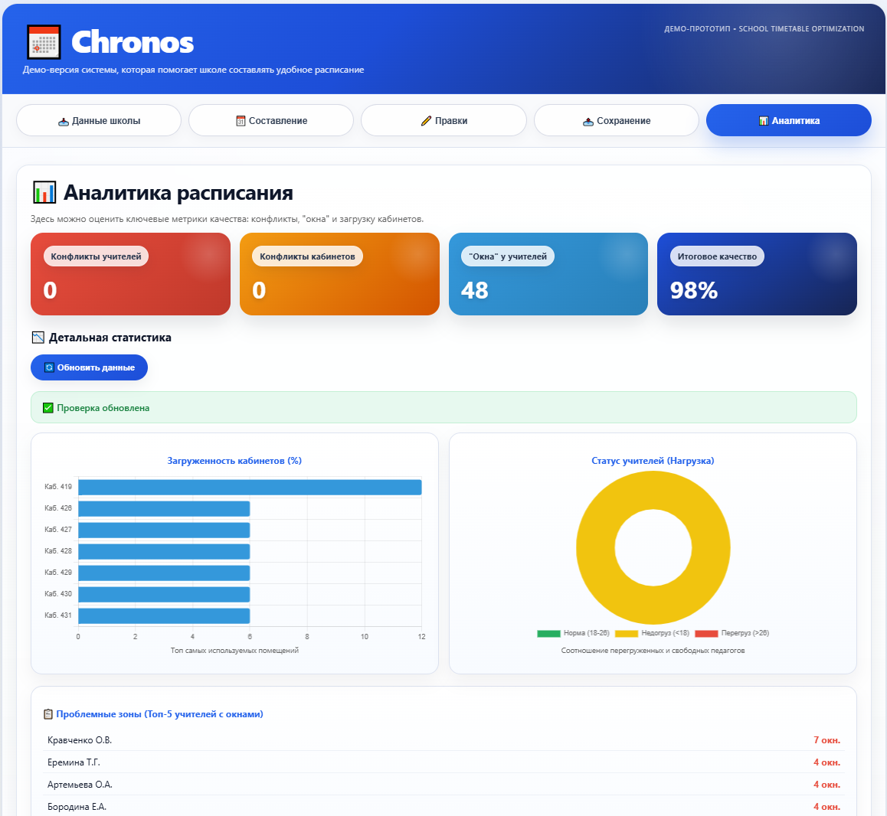
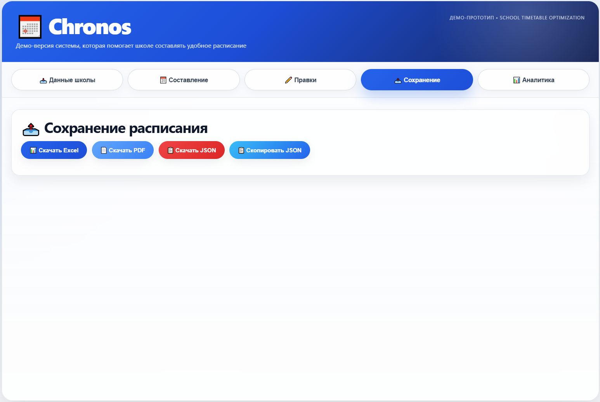

Chronos экономит завучу недели нервов на школьном расписании
Вместо 2–3 недель ручной сборки расписания в Excel — один вечер загрузки данных и проверка готового варианта. Без ночных правок перед 1 сентября.
- Каждый год расписание приходится собирать с нуля и править до ночи.
- Учителя жалуются на «окна» и накладки, кабинеты всё время пересекаются.
- Перед 1 сентября всплывают ошибки, и приходится переделывать всё ещё раз.
Chronos — учебный прототип. Он показывает, как можно упростить жизнь тем, кто каждый год собирает школьное расписание.
- Сам подбирает расписание для классов, учителей и кабинетов с учётом школьных ограничений и СанПин.
- Помогает быстро выйти на рабочий вариант расписания к началу учебного года.
- Оставляет за вами только проверку, финальные правки и утверждение.
Доказательство, что решение работает
Chronos — не просто концепция. Прототип был протестирован на реальных данных школы №2070 (Москва), а с его помощью был подготовлен рабочий вариант расписания на второе полугодие.


Как работает Chronos
Логика сервиса построена так, чтобы завуч не начинал с пустой таблицы, а быстро получал понятный рабочий вариант.
В систему загружается Excel‑файл с классами, предметами, учителями и кабинетами.
Chronos рассчитывает вариант расписания с учётом ограничений и помогает избежать пересечений.
После этого завуч может внести точечные изменения, проверить аналитику и сохранить итоговый вариант.




Чем Chronos лучше привычного расписания в Excel
Ключевые преимущества, которые вы получаете сразу после запуска прототипа.
Расписание выгружается в Excel и PDF: отдельные листы для классов, учителей и кабинетов, плюс сводный отчёт по качеству и конфликтам.
Заменился учитель или добавился новый класс — не нужно начинать с нуля. Chronos позволяет быстро пересчитать расписание с учётом новых условий.
Учителя не ставятся на два урока одновременно, классы и кабинеты не пересекаются, соблюдаются базовые требования по нагрузке и «окнам».
Посмотреть, как Chronos собирает расписание
Откроется учебный прототип в браузере. Можно загрузить свои данные в Excel и получить рабочий вариант расписания.